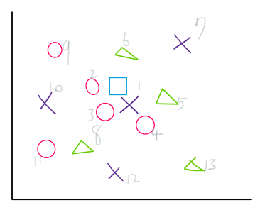

這篇是對KNN分類演算法的核心介紹與筆記
KNN classifier重點
- 不用訓練，他是直接以現有的dataset來直接預測類別
- 依dataset中的data與欲預測的test data距離來比對
- “K” 為選定的數量，亦即要用K個最相近的data來判斷
KNN分類器原理及如何運作
基本上KNN分類器運作的原理，就是假設想要預測一個未知object的類別，其座標為(x, y)，而在空間中(這邊以2D平面說明)計算dataset中全部的data與這個未知object的距離，並排序找出離他最近的K個點，這K個點代表的objects各有其代表的類別。
因此KNN分類器預測這個未知object的結果，就是這K個objects出現最多次的那個類別。
Example解釋

如圖所示
依我們輸入的的測試data(□)，與之最近距離的排序結果如上圖數字為
X、○、○、○、▲、▲、X、▲、○、X、○、X、▲
以此我們可以預測以
K=3，○有2個，X有1個 => □類別應為○
K=5，○有3個，X有1個，▲有2個 => □類別應為○
K=8，○有3個，X有2個，▲有3個 => □類別可能為○或▲
*#*計算距離的方式可以用不同方法，這邊僅以最直覺的歐式距離來計算